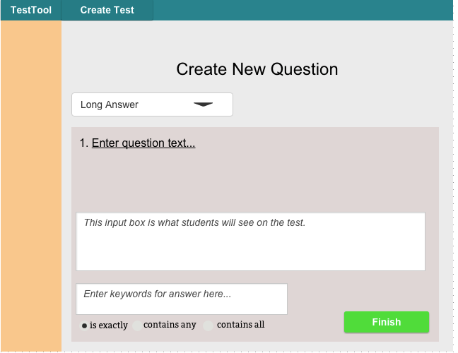

2.3.1. Creating Questions
The instructor lands here after navigating to Question bank and clicking "New Question". The default question type is multiple choice. The instructor can change the question type via the dropdown menu as seen on the right in Figure 1. The instructor can click to edit underlined fields.

Figure 1: Initial Question Creation Screen.
The instructor leaves the question type as multiple choice. Then, the instructor clicks "Enter Question text.."
Figure 2: Filled-In Multiple Choice Form.
Test Tool gives focus to the text input. The instructor types "What is Gene Fisher's favorite color". Then the instructor clicks "Enter question A" causing Test Tool to give that text input focus. The Teacher types "Blue", and hits enter. Test Tool gives input for question focus. The instructor procedes to enter "Green", "Red", and "Yellow" for the next options. The instructor clicks the check box next to "Blue" to indicate that it is the correct answer. Test Tool darkens that check box to show that it is the correct answer.
The filled-in multiple choice form will show the answers that have been entered. The green button on the left side marks an answer as correct, and only one answer can be marked correct. The current correct answer's button is darkened. Answers may be added or removed, down to a minimum of 2. The Teacher clicks "Finish" to return to the question bank .

Figure 3: Long-Answer Question Form.
If the instructor selects long-answer from the dropdown, the question form changes as seen in Figure 3.
The long-answer question form has a text input box which is disabled, to show what students will see when taking the test. The question prompt is underlined to show it is editable.
The radio buttons allow the instructor to choose how the automated grader will assess responses. "Is Exactly" will give points only if the response is equivalent to the instructor's answer.
"Contains Any" allows the instructor to input a comma-separated list of keywords, and will give points based on how many of the keywords are found in the response.
"Contains All" allows the instructor to input a comma-separated list of keywords, but will only give points if the student's response contains all of the keywords.
Figure 3: Filled in long-answer question form.
Figure 4: Code Question Form.
If the instructor selects code from the dropdown, the question form changes as seen in Figure 4. The code question form has a prompt similar to the long-answer form. It also has a text input to show any formatted code that may be required for the test question (for example, a Java class or enum for a CPE 102 exam). It also includes a disabled text field similar to the long-answer form, and a button to upload a grading script (for which the UI is not yet defined).
Figure 4: Filled-in Code question form.

Figure 5: Matching Question Form.
If the instructor selects matching from the dropdown, the question form changes as seen in Figure 5. Each element in the left column corresponds to the same line in the right column. Both columns have editable fields, similar to the multiple-choice options. On the test taking view, the options will be randomized.
Figure 5: Filled-in Matching question form.
Once the instructor has filled out their desired question form, the instructor clicks "Finish" and is returned to whichever view brought them to the Create Questions form (Test Bank or Edit Test).